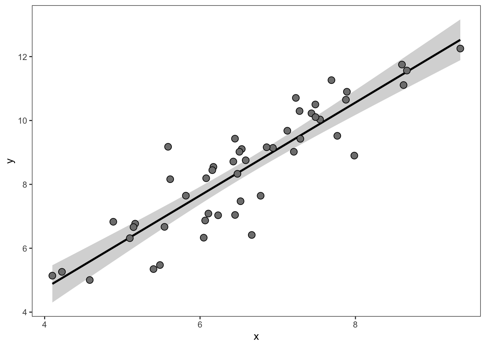
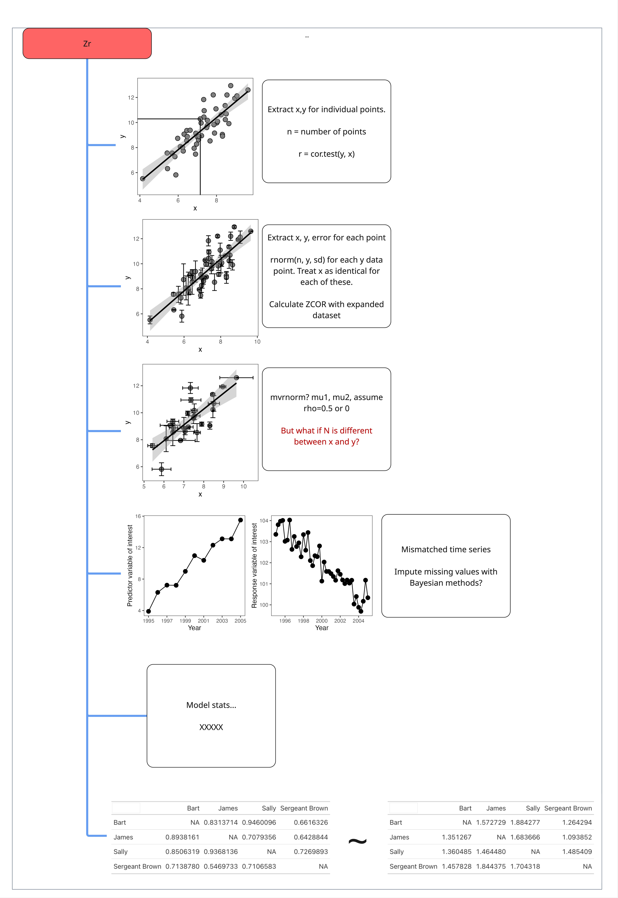
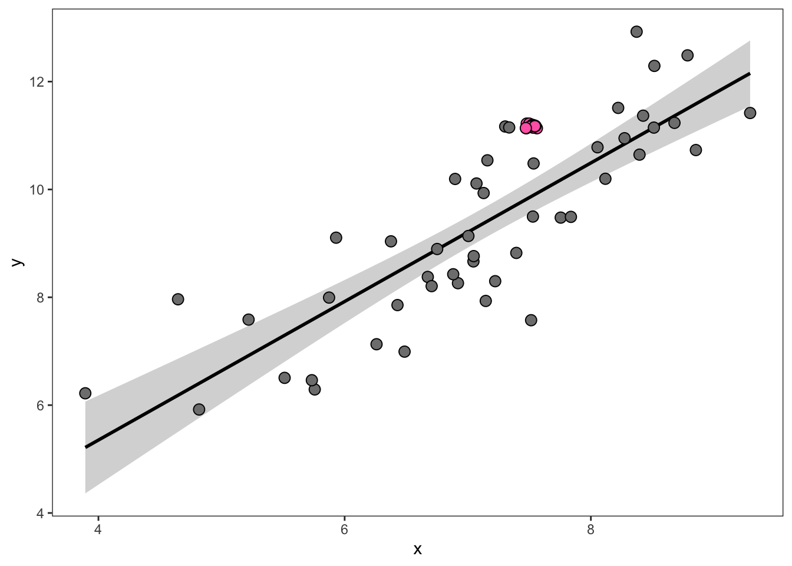
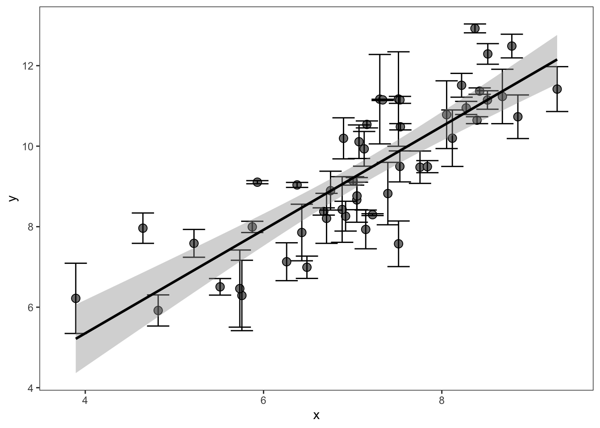
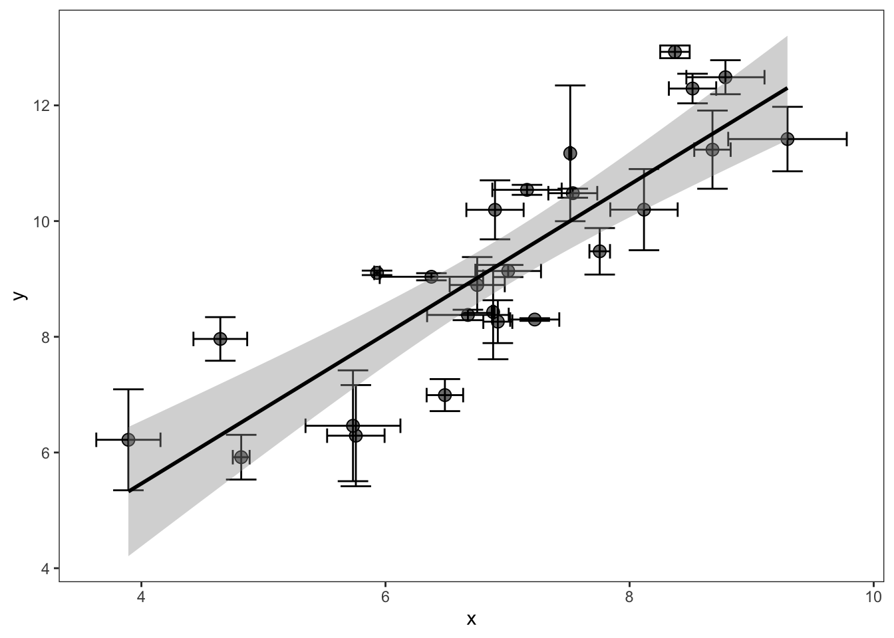
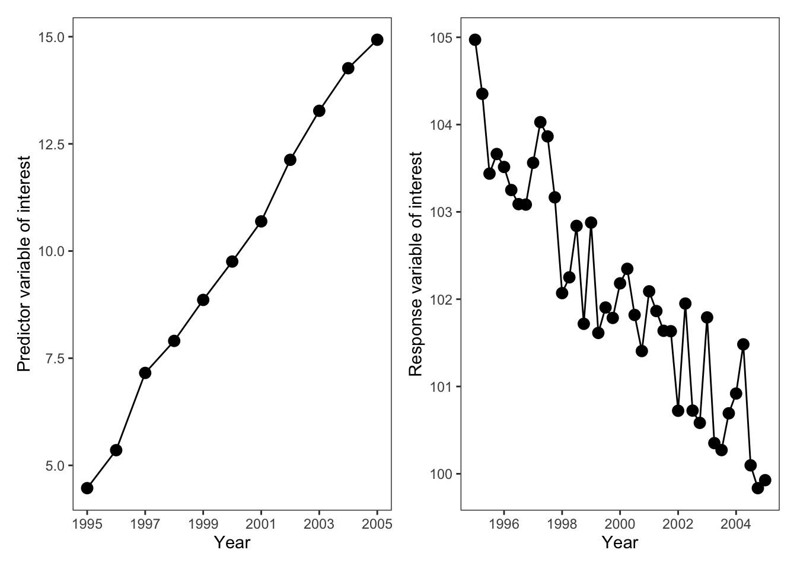

Continuous outcomes with continuous predictor
Zr: the correlation coefficient
Blah blah blah. Reminder about what Zr is.
Cheatsheet:

Simple figures
This is the simplest type of correlation figure. In this case, you’d calibrate the x and y axes and extract each point. Then use cor.test in R to calculate the correlation coefficient:
Then calculate the Zr effect size in escalc:
Overplotting
What if there is an ugly cluster of overlapping points?

In these cases, if the total N is known for the study (e.g., the total number of sampling points), then you can duplicate the values for the red points as many times as it takes to match the total sample size. Otherwise, you’ll just have to digitize as many as you can and use an N that is less than the real N (which makes the overall Zr estimate more conservative—e.g., less weight in the model). For example, in the figure above, we could safely eyeball 5 separate points (though in reality there are 12).
Single axis error bars
But what do you do if each point is actually a mean±SD?

If the error bars are only on the y axis this is fairly straightforward but is a bit surprising. In this case, each point actually has an internal-N, which will need to be gleaned from the methods of the paper. After determining this internal-N, extract the means and SDs for each point, and then draw a distribution of internal-N for each point with an appropriate distribution. Here we’ll demonstrate using rnorm to draw normally distributed data for each point.
head(dat) x y sd n
<num> <num> <num> <num>
1: 6.920364 8.261492 0.37024575 10
2: 6.881844 8.426999 0.81519549 10
3: 6.675297 8.377635 0.09010256 10
4: 7.755148 9.477688 0.40195520 10
5: 7.513595 11.171166 1.17332669 10
6: 5.757089 6.291088 0.87436238 10 y x
<num> <num>
1: 8.052525 6.920364
2: 8.172952 6.920364
3: 8.732656 6.920364
4: 8.162901 6.920364
5: 8.949442 6.920364
---
496: 11.141536 7.336462
497: 11.141100 7.336462
498: 11.186589 7.336462
499: 11.137413 7.336462
500: 11.144027 7.336462In this example data, each point had an internal N of 10 measurements. Notice that the original dataset went from 50 rows (individual points) to 500 rows (50 * 10). We then take this expanded dataset and calculate our correlation coefficient and effect size:
yi vi
1 1.1955 0.0020 Pretty neat, right?
If the variable of interest (the response variable y) is not Guassian (e.g., is not normally distributed) but is count (Poisson) or overdispersed count data (negative binomial), etc, then you need to draw the underlying data with the appropriate distribution (e.g., rpois or rnbinom). Doing so requires converting author-provided summary statistics (e.g., the mean and standard deviation in the figure above) to the distribution-specific parameters. See (sec?) where we demonstrate this for negative binomial data.
However, in this example (and the one below) doing this assumes that the internal measurements of each point are at least somewhat independent—at least as independent as the sample N for other studies in your meta-analysis. If the internal measurements of these points are far less independent than in other studies in your meta-analysis then you may want to calculate the correlation just on the point means, and ignore the standard deviation. These decisions require a degree of thoughtfulness and good documentation to ensure consistency, especially when extracting data from a diversity of (messy) ecological studies.
x and y axis error bars
What do you do if there are also error bars on the x axis? For example, if each point is a mean±SD of two different measurements. This is common in field studies, where researchers may sample vegetation at a site and some other factor (e.g., animal activity or soil nutrients) and then present the means±SD of each site in a correlation.

In this case, you’ll do approximately the same thing. Except that you need to choose a single internal-N (for the columns of expanded x and y to align). The most conservative choice would be the N with the lowest sample size between the x and the y variable.
head(dat) x y y_sd y_n x_sd x_n
<num> <num> <num> <num> <num> <num>
1: 6.920364 8.261492 0.37024575 10 0.11884255 20
2: 6.881844 8.426999 0.81519549 10 0.01047575 20
3: 6.675297 8.377635 0.09010256 10 0.33431114 20
4: 7.755148 9.477688 0.40195520 10 0.08436857 20
5: 7.513595 11.171166 1.17332669 10 0.00838382 20
6: 5.757089 6.291088 0.87436238 10 0.23541145 20# Choose the n with the lowest sample size:
dat[, n := min(c(x_n, y_n))]
xy_expanded <- list()
for(i in 1:nrow(dat)){
xy_expanded[[i]] <- data.table(y = rnorm(mean = dat$y[i],
sd = dat$y_sd[i],
n = dat$n[i]),
x = rnorm(mean = dat$x[i],
sd = dat$x_sd[i],
n = dat$n[i]))
}
xy_expanded <- rbindlist(xy_expanded)
cat(md_table(head(xy_expanded)))|y |x |
|--------|--------|
|8.896566|7.037615|
|8.205832|6.967566|
|9.335435|6.941961|
|7.922306|6.650348|
|7.529250|6.863247|
|8.110396|6.919841|Our dataset went from 50 rows (one per point in the figure above) to 500 rows, given an internal N of 10 per point.
Now, we calculate the correlation between all of these points and calculate our ‘Zr’ effect size:
Mismatched time series
Sometimes the factors of interest that you want to correlate are in separate graphs as time series. In these cases, it’s just the tedious task of extracting data from each and aligning the two variables.
However, what do you do if the time series are mismatched?

While imputing the missing values in the second panel is one possible approach, it is the least conservative. Instead, we recommend summarizing (e.g., taking the mean) or filtering the data (after aligning by the shared x-axis) to just those occassions where there is data for both series.
Matrices
Some types of correlations are more complicated because they are actually based on matrix algebra. For instance, correlations between pair-wise behaviors.
For example, imagine calculating a correlation between a matrix of grooming behavior:
| Grooming | ||||
| person1 | Bart | James | Sally | Sergeant Brown |
|---|---|---|---|---|
| Bart | NA | 0.8563318 | 1.0674227 | 0.9297694 |
| James | 0.9044303 | NA | 1.0268062 | 0.8592912 |
| Sally | 0.8499159 | 0.7906019 | NA | 0.9165075 |
| Sergeant Brown | 0.7697816 | 0.7433053 | 0.8870761 | NA |
And a matrix of defending each other from adversaries:
| Defense | ||||
| person1 | Bart | James | Sally | Sergeant Brown |
|---|---|---|---|---|
| Bart | NA | 2.000934 | 1.105019 | 1.873326 |
| James | 1.754327 | NA | 1.516128 | 1.777846 |
| Sally | 1.566404 | 1.656547 | NA | 1.512214 |
| Sergeant Brown | 1.385764 | 1.690629 | 1.798737 | NA |
XXXXX
Model estimates
?????